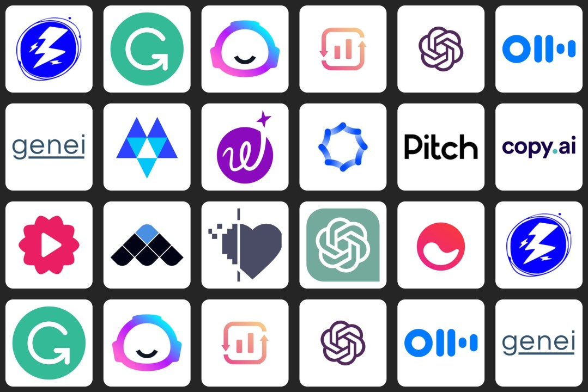

Bu web sitesinde yapay zekanın büyüleyici dünyasını keşfedecek; özellikle günümüzün en popüler ve etkileyici modelleri ChatGPT, Gemini ve Claude'un özelliklerini kıyaslayacağız. Her biri farklı güçlü yönlere sahip bu sistemler hakkında detaylı bilgi edinebilir, kullanım alanlarına dair örneklere göz atabilirsiniz. Yukarıdaki menüden sayfalarda gezinebilir ve ilginizi çeken modele dair kapsamlı açıklamalara ulaşabilirsiniz.
Bu sayfa, yapay zekanın günlük hayata etkilerini ve geleceğe dair potansiyelini anlamak isteyen öğrenciler ve meraklılar için tasarlanmıştır. Basit ve anlaşılır dil kullanarak karmaşık teknolojileri anlatmaya çalışıyoruz.

Yapay zeka hakkında daha fazla bilimsel bilgi için Vikipedi sayfasını ziyaret edebilirsiniz.